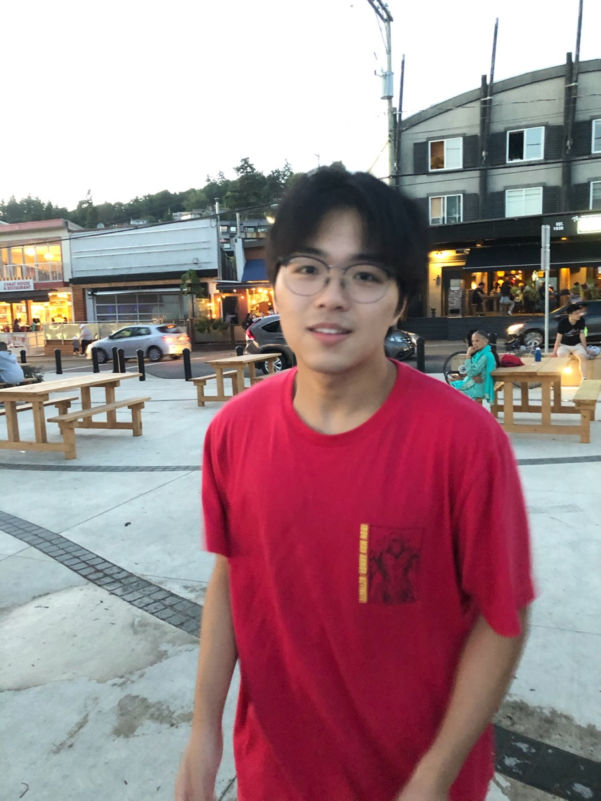

FiLMed: Fine-Grained Visual Tokens Align with Localized Semantics
* and Li, X. Accepted to Actionable Interpretability Workshop at ICML 2025.

UPenn Robotics / AI Systems
> M.S.E. in Robotics at Penn.
> Previously studied Computer Engineering at UBC.
> Interested in MLLMs, agentic AI, and embodied AI.
> I like building systems that connect research with real products.
publications.bib
* equal contribution
FiLMed: Fine-Grained Visual Tokens Align with Localized Semantics
* and Li, X. Accepted to Actionable Interpretability Workshop at ICML 2025.
MLAN: Language-Based Instruction Tuning Preserves and Transfers Knowledge in Multimodal Language Models
Tu, J.*, *, Crispino, N., Yu, Z., Bendersky, M., Gunel, B., Jia, R., Liu, X., Lyu, L., Song, D., and Wang, C. Accepted to Towards Knowledgeable Foundation Models at ACL 2025.
Learnable Community-Aware Transformer for Brain Connectome Analysis with Token Clustering
Yang, Y.*, Zhao, B.*, *, Zhao, Y., and Li, X. Submitted to Medical Image Analysis.
research.log
WashU NLP Group / 2024
Worked on instruction tuning for MLLMs and built efficient training pipelines. First-author work accepted to an ACL 2025 workshop.
UBC TEA Lab / 2023-2025
Worked on interpretable vision transformers for skin lesion analysis and transformer models for brain connectome analysis.
Westlake University / 2023
Built physics-informed modeling systems for dynamical problems governed by time-dependent PDEs.
experience.log
Microsoft / incoming 2026
Incoming Software Engineering Intern on AI Platform.
ShotAI / 2025
Built a multi-agent video editing system with Gemini, LiteLLM, tool calling, and fast media pipelines.
LEAP A.I. / 2023-2025
Built a university AI assistant with RAG, fine-tuning, function calling, and AWS serverless infrastructure.
Walnut / 2024-2025
Built an AI study assistant with transcription, PDF retrieval, and a production backend.